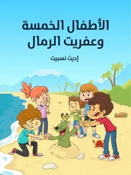

الأطفال الخمسة وعفريت الرمال

قراءة عربية أصلية محددة النطاق في الصفحات 9، 10 من ملف PDF المرتبط، وليست تلخيصا كاملا للكتاب. نناقش ما تدعمه هذه المقاطع فقط.
مغامرة أطفال مع عفريت
يفتتح الكتاب بوصول العائلة إلى المنزل الجديد: أميال من المحطة، وعربة مستأجرة يطل الأطفال من نافذتها يسألون ألم نصل بعد، حتى تتوقف أمام منزل أبيض بجواره بستان فاكهة. يتدافع الخمسة للنزول، يتأمل روبرت شدة بياض المنزل، وتنبه أنثيا إلى جمال الزهور، وتشير جني إلى ثمار البرقوق، بينما يريد الصغير أن يمشي. بهذه المشاهد البيتية الهادئة تمهد إديث نسبيت للحظة التي سيعثر فيها الصغار قرب حفرة الحصى على مخلوق أسطوري يحقق الأمنيات، فيتحول الريف الإنجليزي الهادئ إلى مسرح لمغامرة خيالية تجمع بين براءة الأطفال وفضولهم وما تجلبه الأمنيات المتحققة من متاعب لم تخطر لهم على بال. نقل النص إلى العربية صلاح عبد العزيز مفتاح.
زاوية وحدود القراءة
قراءة الصفحتين ٩-١٠ (الفصل الأول من القصة)؛ النطاق افتتاحية المغامرة ووصول العائلة، لا تلخص بقية الأحداث.
الطبعة والقراءة
هذا الكتاب صادر ومتاح مجانًا من مؤسسة هنداوي عبر صفحة الكتاب الرسمية وملفها المرتبط.
تنزيل PDF المجاني ↓ القراءة والمصدر الرسمي ↗